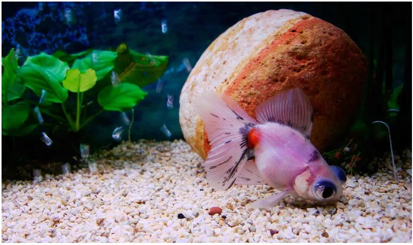

Ваш собака вас любить?? Найімовірніше, так. А кішка? А рибка? І взагалі, що таке любов вихованця, і як зрозуміти, як він до вас ставиться? В коротенькому списку тварини перераховані по спадаючій здатності любити людину (тобто прив'язуватися до господаря і висловлювати цю прихильність). Список не претендує на об'єктивність або академічну строгість (хоча фахівці часто спиралися на дані наукових досліджень), але все-таки проливає світло на взаємини господарів з вихованцями.
| 1.Собака: машина обожнювання. |
| Відносини між собаками і людьми унікальні; наша спільна історія налічує, за різними даними, від 12 до 25 тисяч років. Весь цей час вони вчилися жити поруч з людиною: перетравлювати багату вуглеводами людську їжу, зчитувати наші емоції, розрізняти слова людських мов. Кайл Кіттлсон, фахівець з поведінки тварин: «Головний спосіб вираження любові у собак - дотик. Собаки облизують людей і дозволяють гладити себе, цим висловлюючи добре ставлення і прихильність. А ще собаки зчитують ваша поведінка і підлаштовуються під нього - тому коли в будинку, де є собака, з'являється дитина, собака, як правило, починає його захищати ». Собаки здатні любити так, як ніяке інше тварина - і тому очолюють наш список. |
| 2.Кішки: суцільні протиріччя. |
| Кішки - найсуперечливіші вихованці в списку: фахівці стверджують, що до людей їм немає ніякого діла - але деякі приклади поведінки складно інтерпретувати інакше, як прояв прив'язаності до людини. Соціальність для кішок опціонально: в дикій природі вони живуть поодинці, але іноді формують групи, в яких досить тісно спілкуються. Однак їх виживання не залежить від здатності розпізнавати сигнали і здогадуватися про емоції інших кішок; домашні Felis silvestris catus і їх найближчі дикі родичі не полюють і не виховують потомство спільно, тому їх соціальні навички залишають бажати кращого. З іншого боку, за плечима у домашніх кішок п'ять тисяч років тісного сусідства з людьми. Час, проведений пліч-о-пліч, а часто - і під одним дахом, пом'якшило їх характер і зробило ніжними компаньйонами - але навряд чи навчило любити. «Кішки дивляться на вас як на обслуговуючий персонал», - стверджує Ассирові-Балоган. Йорг дотримується схожої точки зору: «Ймовірно, ви для кішки - джерело їжі і іноді - розваг, тому кішка може піти від вас і знайти новий стіл і дім». З іншого боку, для кішок не так вже й рідкісні спроби «підгодувати» господаря - принести вбиту миша або птицю; крім того, багато домашні кішки відрізняють господарів від сторонніх - довіряють першим і бояться останніх. Можливо, в їх маленьких головах все-таки жевріє почуття до господарів - таке ж суперечливе, як вони самі. |
| 3.Акваріумні рибки: занадто далекі. |
|  |
| Вони в воді, а ви - ні, і це серйозна перешкода для спілкування. Акваріумні рибки можуть бути досить кмітливими, їх можна дресирувати, але не чекайте, що рибка причепиться до вас. |